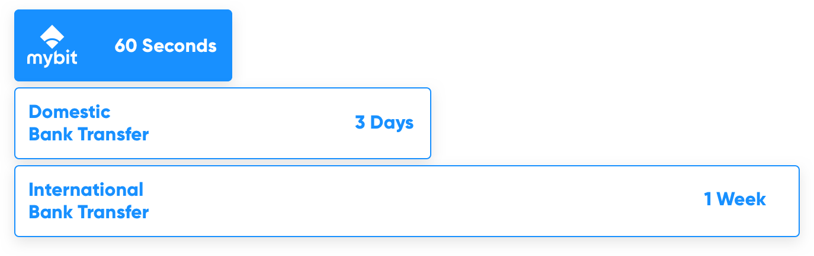
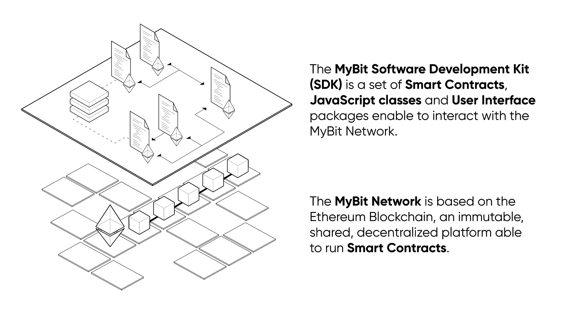
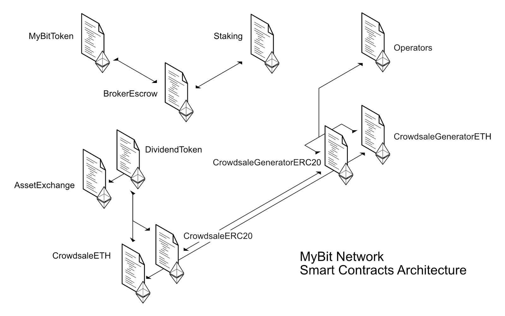
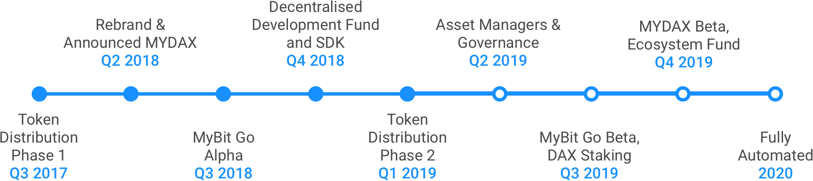
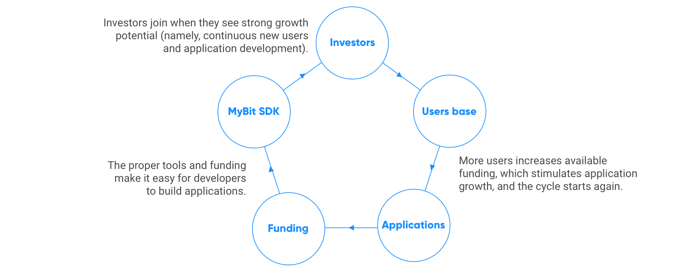
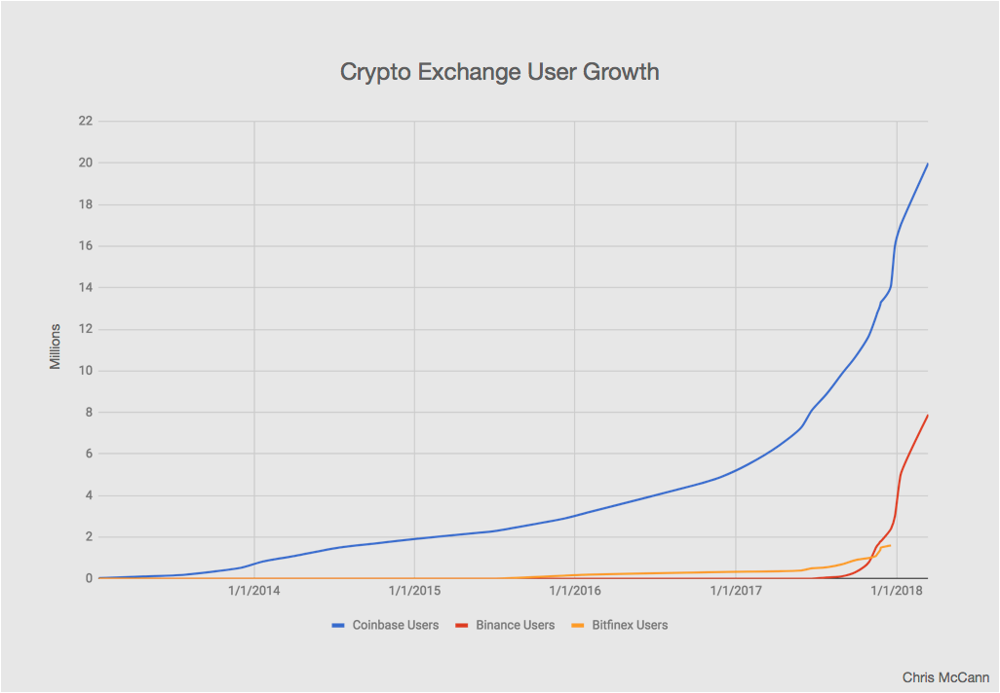
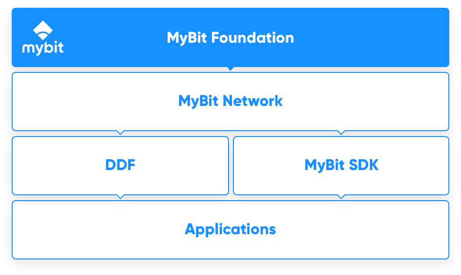
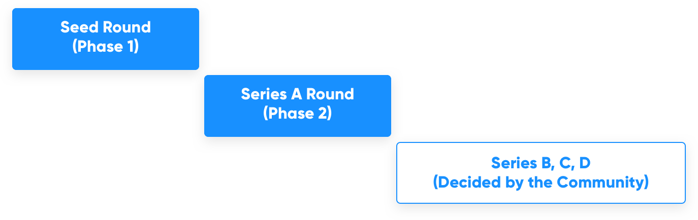
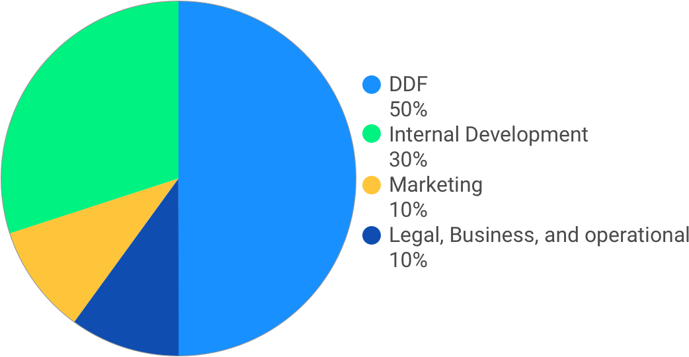
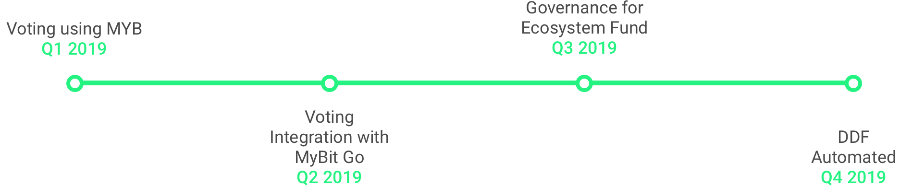

Leaders in Distributing Wealth
DAO Address: https://snapshot.page/#/mybit/all
September 2020
Table of Contents
- Executive Summary
- The Problem of Establishing Trust in Asset Management
- Trust in People
- Trust in Transactions
- Trust in the Ledger
- The Cost(s) of Trust
- Increasing Costs
-
MyBit’s Solution
- Universal Trust
-
A White Label Investment Platform
- How It Works
- Process for Assets Being Listed on MyBit
- The Role of the Asset Manager
- The Investment and Distribution Process
-
A Decentralised Asset Exchange
- Background of Primary and Secondary Markets
- Liquidity
- Assets
-
MyBit SDK
- MyBit SDK - Smart Contracts
- MyBit SDK - Network.js
- MyBit SDK - UI Kit
- Product Architecture and Development Timeline
- Decentralised Development Fund
- Market Opportunity
- Strategy
- Business Model
- Operating Structure
- MyBit Ventures
- Monetisation
- Token Economy
- Token Details
- Strategy and Economics
- Token Distribution
- Distribution Phase 1
- Distribution Phase 2
- Legal
- Resources
Executive Summary
The global assets under management market is vast and growing at unprecedented levels. According to PWC, the market size is projected to double from $84.9 trillion in 2016 to $145.4 trillion by 2025. Additionally, the World Bank estimates that, by 2025, 10% of all global assets will be stored on the blockchain. That’s a 4,276% increase - up to $14.54 trillion from $340 billion (as of September 2020).
The PWC report, Asset Management 2020: A Brave New World, emphasises that asset management firms must embrace innovative technologies to remain competitive during this stage of rapid market growth. It also states that as the market continues to grow, the distribution of assets will transition to a smaller number of firms managing a much larger value of assets as a result of a select few appropriately implementing new technology and benefiting from the cost-savings and expanded operational capacity derived from increased efficiency.
Despite the opportunity this massive market growth creates, there are two critical problems which must be solved prior to asset management firms being able to truly benefit:
-
Trust: Trust can be broken down into three core components: establishing, maintaining, and transferring. Creating and maintaining trust between an asset manager and client is a time consuming and expensive endeavour. The process involves individual client-manager relationships which is not an efficient use of company resources. Furthermore, trust is not transferable to any measurable extent under current models.
Establishing trust is necessary at the initial stage of the relationship for a client to trust their personal capital with an asset manager. Since trust is most easily quantified by historic actions, it creates an environment where older, well-established asset management firms dominate the market. This makes it very difficult for new firms to be competitive regardless of whether their performance is superior. More often than not, investors settle for asset managers with established levels of trust rather than optimal returns. With alpha, the excess return of an investment relative to the return of a benchmark index, being the most important metric to the majority of investors, it is concerning that the market is dominated by trust.
Once established, maintaining trust is also a costly task which involves dedicated client managers. In addition to keeping clients emotionally trusting, a closed, centralised ledger exposes investors to unnecessary counter-party risk where clients must trust asset managers to 1) manage their capital responsibly and 2) send the correct profits in a timely manner. While this may seem simplistic, fraud is rife within the industry because of limited transparency and inability to effectively verify financial data due to the lack of an open, auditable and decentralised ledger.
Under current asset management models, trust is not transferable - meaning that, once established, it cannot be transferred to a different asset manager. This makes it extremely difficult and time consuming to migrate to a new firm even if it is more aligned with an investor’s interests. There is a rising demand from clients to increase the flexibility of their capital to reach a wider range of investment opportunities, and this can only be achieved if trust is transferable.
-
Increasing Costs: While there is a trend across the asset management industry of lowering fees to increase competitiveness and attract new clients, asset managers struggle with being unable to reduce fees and still remain profitable due to their high fixed overhead costs resulting from bloated back offices.
In addition, asset managers’ current infrastructure is not designed to seamlessly integrate with new technology, specifically the token economy. This new market has grown exponentially from from $10 billion in 2014 to as high as $800 billion in 2018, and is expected to go above $1 trillion by 2021. Yet, participating in this massive opportunity would result in asset managers offsetting the costs of modernising infrastructure by increasing client fees.
Lastly, time is another cost. Distributions to stakeholders are slow and often only occur on a quarterly or annual basis. Such infrequent distributions - while the industry norm - actually create risk for clients because they are unable to capitalise on new, short-term opportunities. Over long periods of time, the compounded opportunity costs take an irrevocable toll on an investor’s portfolio.
The MyBit Network solves these critical issues present in the asset management industry by providing the infrastructure for the next era of wealth management services. By combining universal trust from the Ethereum blockchain with the resources and tools required for developers to effectively build, maintain and scale decentralised applications, the MyBit Network changes the way the asset management industry operates.
The MyBit Network is comprised of:
- Universal Trust: By harnessing the Ethereum blockchain, we’re able to securely record all of the information typically needed to ensure trust. From transaction times and addresses, to withdrawal conditions and delivery times. The Ethereum blockchain allows anyone to securely connect with other individuals without having to face any entry barriers. By leveraging in these capabilities, the MyBit Network can provide not only reliable transfers but also seamless access to a series of banking operations that otherwise would require a heavy investment in terms of infrastructure.
- SDK and Toolkits: The MyBit SDK is a set of Smart Contracts, JavaScript classes and User Interfaces libraries that increase the development speed of MyBit Network applications. By leveraging on the powerful dependency and package manager NPM, any proficient Web Developer can develop Fintech solutions using our out-of-the-box tooling and MyBit Network system architecture. Not only does this lower the entry requirements for any developer, but it removes the need for any knowledge of backend or infrastructure in order to develop production-ready decentralised applications
- White Label Investment Platform (MyBit v2.0) and Decentralised Exchange (MYDAX): MyBit v2.0 is an investment platform which makes it easy and cost-effective to invest in alternative assets such as Internet of Things (IoT) devices. It enables investors to directly invest in assets and receive profits in realtime from all over the world. The Internet of Things is predicted to produce revenues in excess of US$10 trillion annually by 2025. Through simple integration with the MyBit Network - by using Ethereum smart contracts - any connected device that generates revenue can provide real, automated returns across global markets. Not only is it easy to use, but it’s fundamentally secure and entirely automated. MYDAX is a decentralised exchange which allows anyone to buy and sell crypto-assets without a broker or other third-party involvement.
- MyBit Ventures: This is designed to support and grow the MyBit Network without relying solely on the core MyBit team. It includes the MyBit Decentralised Development Fund (DDF) and the Ecosystem Fund. The goal is to incentivise developers all over the world to contribute to the development of the MyBit Network through micro-tasks and new concepts. This is essential as Network use cases are expanded, including dApps such as MyBit Payroll, Will and Trusts. The DDF enables Mybit to scale at a much faster rate and in a much more cost effective way - such as by having 1000 Developers working on one task versus 100 working on ten each. The Ecosystem Fund will provide additional support to developers who want to build viable new concepts on top of the MyBit Network.
The Opportunity
The scale of the opportunity is vast. The global market for wealth management platforms is expected to grow from US$1.7 billion in 2017 to US$3.2 billion by 2022 while the global appetite for asset trading shows no signs of slowing down. For equities alone, the London Stock Exchange deals with daily trade volumes of over US$6.7 billion while the New York Stock Exchange is trading at around US$45-55 billion on any given day. All the while the market for cryptocurrencies and related products continues its own exponential growth.
Business Model
The business model is simple and effective. MyBit assesses a 5% fee for all assets funded via MyBit v2. Other dApps using the MyBit Network have their own specific fees which may consist of revenue or burning models.
MyBit is a community managed project, governed by a DAO (Decentralized Autonomous Organization). This means that the 5% Fee from funded assets will be used to sustain operations, and any remainder will be used to buy back MYB on the open market and burn them. Excluding MyBit v2.0, all other MYB used to pay for fees associated with applications built on the MyBit Network will be burnt.
Token Ecosystem
The core concept behind the MyBit Token Model is to support demand through value and a steadily reducing supply. Strong token economics consist of a combination of locking (to limit supply and sell pressure), burning (to reduce supply in perpetuity) and the creation of demand (buy pressure). Two locking mechanisms have been incorporated into the MyBit Network to date: Staking and Asset Collateral. Burning to reduce supply is incorporated at the foundational level of dApps running on the MyBit Network. Demand is created by the token acting as fuel for the MyBit Network which is required by users to participate in the Network and/or specific dApps.
- Asset Management Suffers from Two Massive Problems: Establishing Trust and Increasing Costs
The global asset management market is expected to grow exponentially over the coming years.
The Token Economy is a perfect example of this growth. It has already grown from $10 billion in 2014 to as high as $800 billion in 2018 - and The World Bank predicts it will reach $14.54 trillion by 2025.

Alternative asset classes are also projected to double from 2016 levels to $21.1 trillion with developing markets in Latin America and Asia Pacific experiencing the fastest growth.
Although the asset management market is poised to experience extreme growth, asset managers suffer from two massive problems: establishing trust and increasing costs.
1. The Problem of Establishing Trust in Asset Management
Creating trust is a huge challenge, especially for new asset managers. The result of this is a market that is largely dominated by a small number of large asset managers who enjoy a de facto monopoly.
Why is trust important? This entire industry is built on trust.
Since clients heavily weigh their decision of who to choose as an asset manager on trust, it has quickly become a valued commodity within the industry. The knock on effect is that investors are more likely to invest with a trusted asset manager - even if another manager has better terms or a strategy that more closely aligns with the investor’s goals.
But trust doesn’t stop there. Not only do clients need to trust an asset manager, but as- set managers need to establish trust between themselves and their counterparty to make transactions. Every time trust needs to be established, it costs time and money.
1.1 Trust in People
It goes without saying that, when sending a stranger hard-earned money, trust is essential.
But this trust is multifaceted. First, one must expect the manager to protect their money and return it to them, should they wish. One must also trust the manager to invest in what they promised and send one the revenues - in the correct amounts - that any of one’s investments generate. All of this relies on trust.
It’s also important to note that often investors do not actually own an asset. They merely own a part of the company that owns the asset - and so they trust that the ledger is accurate and fair. This is traditionally done with a paper record on a closed, centralised ledger.
In addition, redemptions may not be available immediately because assets will need to be sold. Whether this happens in a timely manner again relies on trust - because while it may be in one’s best interests to sell immediately, it may not be in the fund’s.
1.2 Trust in Transactions
Trust also defines the transfer of assets. When two (or more) parties transact, trust must be established first.
For example, if an investor wishes to transact with the owner of an asset, the investor’s goal is to exchange money for ownership of the asset (and the revenues the asset produces). This enables the investor to either continue earning the passive income from the asset or have the potential to resell it at a premium - if the asset value experiences growth.
At the most basic level, both parties need to prove to the other that a) the buyer has the money to purchase the asset and b) the seller has rightful ownership of the asset. This is often achieved through verification by third party services and registries.
Once this is completed, another line of trust must be established: when the buyer sends the money, they need to ensure the seller transfers the asset to them. This is where both parties agree on a broker or escrow agent to establish trust between them. Both the money and the asset ownership are transferred to the middle man; they then finalise the transaction by sending the money received from the buyer to the seller and transferring the asset from the seller to the buyer.
Establishing trust for transactions, therefore, leads to unnecessary expenditures - namely the time spent and costs incurred.
1.3 Trust in Ledger
Another form of trust relates to the ledger. In the scenario above, an important piece of the transaction process was omitted: validation of financial data
Anyone buying an asset needs to ensure that the reported financials of the asset are valid. Since accounting data is stored in a centralised, private ledger (which is more often than not in complete control of the seller), the buyer often employs a third-party, forensic accountant to analyse the financial data. Yet, despite the additional time and cost, this does not guarantee that the financials are completely accurate.
In addition, a further step must be completed: updating the ownership ledger after transferring the ownership of the asset from the seller to the buyer. This again costs time and money and does not guarantee complete accuracy nor offer protection from fraud.
1.4 The Cost(s) of Trust
Building trust costs time and resources. These can be divided into three main areas: the cost of management, since Asset Managers spend time and money building and retaining the trust of their clients, which is then priced into their fees.
Transactional, because middlemen - such as brokers and escrow agents - are required for transactions. And the cost of the ledger, where accountants must maintain and verify ledgers through internal and external audits.
There are also additional costs and risks stemming from these three areas - such as portability, or the lack of it. Investors and Asset Managers invest all this time in building trust, only to lose it all if a client-manager relationship ends.
In short, trust is a problematic - but essential - part of today’s asset management industry. We have seen how fragile this trust can be and how difficult and costly it is to build and maintain. We will explore the fundamental problem of these costs, and how the industry has failed to adapt to them, in the next section.
1.5 Increasing Costs
Trust is a massive issue in asset management, but it is not the only one. Perhaps the greatest threat to the asset management industry as we know it is the continuing trend of rising costs.
Today, there is approximately $100 trillion global assets under management - with this figure expected to double by 2025.
A core reason behind rising costs is the desire for greater transparency - such as the incorporation of technologies which offer real time data and faster distributions. In addition, there are costs associated with establishing trust in developing markets such as South America, Asia, Africa, and the Middle East. These markets are currently experiencing the highest growth rates, but establishing trust here requires serious and continuous investment.
Furthermore, there are a whole range of other opportunity costs. The industry standard is for asset managers to distribute quarterly or annually and such infrequent distributions leads to an inability of clients to capitalise on new, short term opportunities.
The problem is, even if this issue is solved - say with improved transaction speeds - bank transfers are still slow and it can take up to three days to settle domestically or a week for international payments. This is a structural inefficiency, before we even consider the additional costs of international payments.

But there is a solution.
To handle the explosive growth of global assets under management and decreasing fees manager charge, there needs to be an infrastructure-level solution. A solution that solves the issues of establishing trust and ever-increasing costs.
This is why the MyBit Project is building a solution for the future. Based on Ethereum smart contracts, we envisage a future where individuals can inexpensively establish trust on a personal, ledger and transactional level while revolutionising the cost, transparency and real-time issues that currently plague the industry.
2. MyBit’s Solution: A Blockchain-based Infrastructure for the Next Era of Wealth Management
The MyBit Network is a blockchain-based solution that will revolutionise the asset management industry.
It consists of the infrastructure, tools and funding model to change the way asset managers respond to the demands of the industry. By equipping them for the future, they will be uniquely equipped to deal with exponential growth without the risks associated with rising costs.
Our solution combines Ethereum’s built-in system of universal trust with our white label Software Development Kit (MyBit SDK). The MyBit Network empowers both existing and new wealth management models to seamlessly tap into the benefits of blockchain technology.
But trust doesn’t stop there. Not only do clients need to trust an asset manager, but asset managers need to establish trust between themselves and their counterparty to make transactions. Every time trust needs to be established, it costs time and money.
MyBit is on a mission to:
- Solve the crucial issue of establishing trust - personal, ledger and transactional - that is bottlenecking the entire asset management industry.
- Increase transparency, enable real-time revenue distributions and streamline reporting.
- Reduce the costs of investing in and managing assets through white label SDK and out of the box applications.
- Create liquidity through a decentralised exchange optimised for secondary market assets.
- Enable seamless integration into new markets, such as the token economy.
In short, the MyBit Network is universal foundation upon which all future wealth management and distribution applications can be built. And it is simple for anyone to get started.
2.1 Universal Trust
To achieve Universal Trust, the MyBit Project is building the MyBit Network, a protocol for generating wealth distributing applications on top of the Ethereum Blockchain powered by the MyBit Token (MYB), an ERC20 standardised token. By selecting the Ethereum Blockchain, all financial operations can be fulfilled through Smart Contracts, absolute instances with a defined set of rules deployed in public, secure, and transparent infrastructure. These instances can function as a replacement for trust within the wealth management infrastructure since they are open source and auditable whenever deployed to the public Ethereum Blockchain.
As a comparison, centralised financial institutions require expensive centralised servers to sustain a series of protocols and practices to function. The development, processes and equipment needed to maintain these sort of operations have a high maintenance cost. Smart Contracts, on the other side, have high costs regarding initial development, yet, evolve into reliable units of software that require minimal maintenance. The moment a MyBit Network contract is deployed into the Ethereum Blockchain, it can be used as many times as desired, even if the initial owners are no longer available. This sort of support cannot be said to traditional financial institutions; whenever they collapse, all the assets and intellectual property disappear with them. People are forced to trust they will not fail, which was not the case for many high-profile institutions in 2008.
Another example where Smart Contracts are superior to centralised solutions is that they are open by nature. MyBit Network Smart Contracts are deployed into the Ethereum Blockchain. It is improbable that anyone can request an audit of the software used in a Bank, but all the financial Smart Contracts powering the MyBit Network are available in a public codebase and Blockchain. Last but not least, as any reliable Blockchain, the Ethereum Blockchain ensures no modifications against the ledger of transactions are possible. To modify the Ledger, it would require an astronomical amount of investment to force and manipulate the nature of the Blockchain. Financial institutions still struggle with human errors and systematic hacks on a yearly basis, whereas the Ethereum community detects significant patches against Smart Contracts in hours.
2.2 A White Label Investment Platform and Decentralised Exchange
Into the complex and problematic landscape set out above, the MyBit Network offers a solution. White label solutions - such as the decentralised investment platform (MyBit v2.0) - use Ethereum to securely establish trust and execute transactions via smart contracts, which means there is no need for a middle man.
The platform also includes a built-in, real-time distribution management system, while offering full transparency and the means to create liquidity. The technology is also highly adaptable, simple enough to integrate into new markets such as the token economy and the Internet of Things.
2.2.1 How It Works
MyBit v2.0 is made up of three main components: Assets, Asset Managers, and Investors.
In the initial release of MyBit, the focus is on the Internet of Things and, specifically, IoT assets. Iot Assets consist of any machine connected to the internet which generates revenue by providing a good or service - think of a 3d printer anyone can pay to use. However, it is important to note that the platform is a white label solution; it can be integrated into both existing and future markets - not just the Internet of Things.
Currently, the Internet of Things is an exciting, emerging market. It is predicted, that by 2025, there will be 50 billion connected devices generating over $10 trillion in revenue annually. This market therefore represents a fantastic use case for the white label MyBit investment platform.
Another key component of the platform is the Asset Manager, the person in charge of maintaining assets which cannot (yet) operate themselves. For example, take a 3D printer. While many parts of such a device can be automated, it still requires someone to refill the device with printing materials. In the future, we believe the 3D printer will be able to communicate with a robot to be refilled automatically, but currently this is not the case - and a person is needed for the IoT asset to function correctly.
The last main component is the investors themselves. Unlike traditional investment platforms, MyBit scales to meet the demands of nearly any investor: be it an individual, group, fund or other institution. Anyone can invest in the assets listed on the MyBit platform. They exchange capital for an ownership stake (either fractional or full) in one of the listed assets, and benefit from the revenue that is generated by that asset.
2.2.2 Process for Assets Being Listed on MyBit v2.0
For companies who offer IoT assets and want to list them on the platform, MyBit is developing an API that can be easily integrated into a wide range of IoT devices. The API ensures that 1) payments flow directly from the device in real-time and 2) usage data, financials and other key information is recorded and visible publicly.
Once the IoT asset is integrated, it moves to our approval process. Here, we analyse the asset based on the following criteria:
- Company history: including the track record, mission and ethos of the company making the assets.
- Asset risk: how much input from an Asset Manager would be required for the asset to function properly.
- Asset financials: including initial cost, ongoing or operational costs, revenue potential, and product lifespan amongst other variables.
Once approved, the asset is listed on MyBit. If the asset does not require an Asset Manager, the company can list the asset directly to investors. Should the asset require one, the Asset Manager must be the one to list it.
2.2.3 The Role of the Asset Manager
Who can become an Asset Manager and what precisely do they do? In short, anyone who can demonstrate the ability to maintain an asset is qualified to be an Asset Manager.
For their effort in setting up and maintaining assets, they are rewarded with a percentage of the asset’s revenue. This acknowledges the hard work they put in - such as obtaining approvals to place an asset in certain locations, in addition to performing regular maintenance.
When listing an asset, the Asset Manager must select the percentage of the asset’s revenue they will receive; they must also put down collateral in MYB. This collateral limits risk for investors because, if the Asset Manager does not fulfill his or her duties, their collateral will be burnt.
Asset Managers can withdraw their collateral at certain intervals throughout the lifespan of the asset. These intervals are dictated by the amount of revenue the asset generates. For example, when 25% asset ROI is achieved ($2,500 in revenue is distributed to investors on a $10,000 asset) then the asset manager can withdraw 25% of the posted collateral.
Rather than impose requirements for revenue percentages and collateral, we decided to let the market decide. This means that if an investor is not willing to invest based on the input values of the Asset Manager, then the asset will not be funded. The principles of a free market and an open economy are incredibly important to MyBit’s vision for the future - thus, letting investors dictate their own risk profiles is paramount.
An example:
A new Asset Manager joins the MyBit platform. He lists a $10,000 asset and inputs a 20% share of revenue with 5% collateral. This listing will be unlikely to attract investors due to the Asset Manager’s short track record, their high share of revenue and low collateral amount.
If the Asset Manager was to offer a 5% share of revenue with at least 30% collateral, the asset has a greater probability of being funded. It can be theorised that as an Asset Manager gains a strong record of performance, the collateral required would decrease.
Ultimately, this model allows the market - not a centralised authority - to dictate each value.
In addition, the following features to the platform are included in the 2020 roadmap:
- Staking for asset collateral: This will enable an investor to cover the collateral for an Asset Manager, if they cannot afford to do so themselves. In return, the investor receives a share of the earned revenue the Asset Manager usually earns from maintaining the asset.
- A reputation system: A detailed tool for investors to explore the history and performance record of a specific Asset Manager. This will empower investors to easily calculate risk and make informed investment decisions.
Beyond MyBit v2.0, functions such as asset collateral will be an essential part of the white label version of the platform. This will enable the platform to be customised to the widest range of scenarios, which will all be powered by the MyBit Token.
2.2.4 The Investment and Distribution Process
So how does the investment and distribution process work? After an Asset Manager lists an asset on the platform, it is immediately open for investment. The investment period is limited to a specific period of time, currently thirty days. If the investment target is not reached by the end of the period, contributed funds are able to be transferred back to investors via the Ethereum smart contract which governs the process. Investors just need to initiate a transaction to receive their funds back from the smart contract.
If the investment goal is reached before the investment period ends, the asset is closed to additional investors and the funds are ready to be withdrawn by the Asset Manager (or the IoT partner, depending on who created the listing). The Asset Manager is the responsible for arranging delivery, installation and any other requirements for making the asset fully functional.
Once the asset is operating and generating revenue, the Asset Manager takes on the responsibility of maintaining it. Because they’re rewarded based on a percentage of the asset’s revenue (rather than a fixed rate), it’s in their best interest to complete their duties to the highest level possible. When an asset is successfully generating revenue, the profits are automatically distributed to all investors based on their ownership stake.
It should be noted that all operating costs, insurance, etc. are outlined during the investment process and will either be priced into the asset cost or deducted as a % of revenue.
An example:
In this example, the asset is a small co-working space in Zürich which is automated by using Slock.it.
- An Asset Manager lists the asset on MyBit. It costs $25,000 to set up and cover the first three months of the lease. It has monthly operating costs including rent payments of $5,000. Furniture is included and all repairs are covered by the property owner in full. It has capacity for 20 people and charges $500 per person, per month. It’s in a great location and occupancy rates are expected to exceed 80%. Since almost everything is automated and the Asset Manager will only need to attract customers, they ask for 3% of net revenue. All of the documents including lease agreements, insurance, contracts, etc. are visible to investors.
- Within the first hour of being listed, one investor has contributed $10,000 (40%), two have contributed $5,000 (20% each), and five have contributed $1,000 (4% each).
- After the asset is fully funded, the funds are transferred to the property manager, of which a small portion will be used for marketing to attract customers. The office is then set up with Slock.it smart locks to fully automate the rental process. For example, if the co-working space is at maximum capacity or payment is not made on time, the lock will not open for that person.
- The Asset Manager’s responsibility is to show potential customers around the coworking space and, when at full occupancy, to organise repairs and other administrative tasks.
- When customers make their monthly payments, they are automatically distributed to investors based upon their ownership stake. They also have the ability to liquidate a portion, or all, of their ownership stake via MYDAX. We’ll look at how that works now.
2.3 A Decentralised Asset Exchange
Blockchain lets you establish trust, transfer value, and execute contractual agreements without the need for human involvement in the process. This results in a more secure, faster and cost effective solution.
MYDAX implements distributed ledger technology, most notable introduced by Bitcoin, to establish trust between parties in a transaction and automatically update ownership and financial records in a “to date” unhackable ledger. It additionally utilises Ethereum’s smart contract technology to automatically execute contractual agreements.
2.3.1 Background of Primary and Secondary Markets
Two major types of markets exist for trading assets such as stocks. Primary markets which include publicly traded companies and secondary markets for alternative assets (or private investments) - these can consist of start-ups, real estate, solar farms, really any asset that is not publicly traded on a stock exchange.
How does the primary market work?
If someone owns a share in a publicly traded company it requires a buyer and broker to complete a transaction. The broker actually owns all of the shares and the owners just have “rights” to them (from an electronic ledger maintained by the broker). The brokers role is to establish trust between the buyer and seller and to execute the transaction which consists of them updating their ledger so the buyer receives shares and the seller receives cash. They charge a commission for every one of these transactions.
Main issues:
- Centralised Ledger
- Buyers and Sellers don’t actually physically have ownership, the brokers do.
- Fees for no reason just to establish trust and execute transactions
How do the secondary markets work?
In primary markets the shares of companies (stock) are registered and you can trust (surprisingly to a high extent) investment banks/brokers to not alter the ledgers due to tight regulation. Additionally, you can easily verify that the stock is associated to the company and prove authenticity. In secondary markets it is not remotely that simple.
There is not a single centralised ledger. Instead there are ledgers from many different locations for each type of asset. These include data such as proof of ownership - through a government body (in real estate for example), or it may just be a paper contract or holding company registration with proof of receipts.
The process of transacting on the secondary market is neither simple nor cheap. Typically a dedicated specialist must be hired to conduct due diligence to verify the seller actually owns the asset and the data is correct. Then non-transparent and often unaudited financial data must be trusted. Often this involves hiring a financial specialist to audit the cash flows - even then it is impossible to trust the data 100%. Next, an escrow agent or broker must be contracted to receive the money and shares then distribute them to the new owners. Last, the ownership ledger must be updated manually.
Since this is time consuming, risky and expensive; the secondary market often suffers from a lack of liquidity because it is so costly to match buyers and sellers. A lack of liquidity can result in the inability to liquidate investments which is a major risk for investors cash flows.
Main issues:
- Ledgers are all fragmented, insecure, expensive to maintain and update, and often not even digitalised.
- Cannot establish trust without intermediaries
- Expensive and time consuming (due diligence, forensic accounting, escrow/brokers, updating ownership ledgers, contracts in paper, etc.)
- Assets are illiquid due to difficulty matching buyers and sellers in a streamlined manner
MYDAX addresses these issues and provides an Ethereum-based solution.
- MYDAX solves the ledger problem. It offers a more secure and automated ledger that requires near zero maintenance and has minimal costs to update.
- MYDAX establishes trust between buyers and sellers without having to utilise a third party agent such as a broker or escrow agent. This vastly reduces (eliminates) counterparty risk and unnecessary fees.
- MYDAX streamlines due diligence thanks to transparency of ownership and financial records. All revenue streams and ownership rights can be viewed at any time, by any one, in real time.
- Ownership is actually real with MYDAX. Buyers and sellers directly own the assets - no banks, no brokers, no third parties.
This makes it exponentially easier, safer, faster, and cheaper for buyers and sellers to conduct transactions on secondary market assets and therefore creates liquidity. Liquidity vastly reduces investor risk and will bring secondary markets to an entirely new level that has the potential to disrupt current primary markets.
2.3.2 Liquidity
With secondary markets and publicly traded assets there is often difficulty in finding a buyer because of the lack of transparency and trust. This translates into risk and higher costs of carrying out any transaction.
If someone was interested in purchasing a stake in a coworking space like the one outlined above (but which was not listed on MyBit), they would first have to connect with a seller. Normally, this is through a third party who charges a fee. The buyer would then need to carry out their due diligence to ensure the seller was the rightful owner and the financial data is accurate. This long and laborious process bottlenecks liquidity on assets such as these.
In contrast, what MYDAX offers is a decentralised exchange which uses a matching engine to connect buyers and sellers without any excessive fees. Since the assets traded on MYDAX are powered by MyBit, it also solves the issues around ownership and a lack of transparency. All financial data is accessible to the buyer and cannot be altered.
By using Ethereum smart contracts, MYDAX allows two strangers to transact and exchange capital for an ownership stake - and the ledger - are all updated automatically. This makes secondary market trading not only easier but cheaper as well. In turn, this should attract more investors to the MYDAX platform and thus increase the liquidity of these assets.
2.3.3 Assets
If there is a need to list an asset which already exists outside of the MyBit Network, through our asset-based SDK, it is easy for anyone to take an existing asset and register it on the blockchain. This could be real estate, art, cars or expensive jewelry. If the asset generates revenue or is predicted to appreciate in value, then it is a viable asset for listing on MYDAX. For example, someone owns a piece of art worth $100,000 that has been appreciating 10% per annum, but has a cash flow issue which requires $50,000. They would normally need to sell the piece of art.
Instead with MYDAX, they can sell a share of ownership to solve their cash flow problem. It’s important to note that our example of art is purely for illustrative purposes. Like with many ‘old world’ assets, smart contracts cannot force the transfer of profits, or even notify the owner of its sale. We believe someday the issue of connecting non-smart assets with the Blockchain and enforcing them will be solved, but currently there is no viable solution. Still, MYDAX could one day be a valuable platform for listing assets far beyond blockchain and the Internet of Things.
2.4 MyBit SDK
The MyBit Network is a business logic layer on top of the Ethereum Blockchain, which in turn becomes a protocol for building wealth management applications. In order to interact with the MyBit Network, we've built a MyBit Software Development Kit (SDK) that enables any developer to build decentralised financial applications.
In brief, the MyBit SDK is a set of Smart Contracts, JavaScript classes, and Graphical User Interfaces (GUIs). These toolkits are the starting point for developers to know how to perform actions against our stack, increasing their development speed.

2.4.1 MyBit SDK - Smart Contracts
The MyBit Network engine is powered by different types of Smart Contracts, which provide a series of functions that can be instantiated and used in multiple use cases. When deployed together on a public Ethereum network with addresses controlled by the MyBit Foundation, they create a MyBit Network, ready to interact and work with. Due it's modular nature, private instances of the MyBit Network can be deployed in any sort of Ethereum-protocol friendly node or Blockchain, including a local development environment.
Here's the list of the different types of Smart Contracts that power up a MyBit Network:
Access
Access is where user access is managed. KYC restrictions can be applied across the
platform using KYC.sol. Requirements can be set here, restricting access to users who
can probably burn platform tokens, or pay for a time-based subscription.
Crowdsale
In the crowdsale folder you can find all the contracts involved in funding new assets.
Funds can be received in either Ether or any ERC20 token the operator agrees to accept.
Each base unit of the received tokens or Wei represent 1 share of the asset. The total
supply of each asset is determined by the amount raised plus the Asset Managers fee.
Database The database folder contains all contracts that abstract storage away from the logical 'front-end' contracts. When deploying the database, you can choose to have an upgradeable platform or a non-upgradeable. Write privileges to the database are determined by the contract manager, which is managed by the owner(s) of the platform.
Ecosystem The ecosystem folder contains all the non-core contracts that are used for the on-boarding of non-platform assets, running an asset-exchange, staking tokens to cover escrow, and platform wallet settings. Before funding assets the platform-token and the platformwallet must be set.
Interfaces All interfaces that our contracts use to interact with other deployed contracts.
Math Math contracts are helper libraries for performing arithmetic without worrying about overflows and underflows.
Ownership Contracts for controlling the platform (such as updating or pausing contracts) by a single account, multiple accounts or ERC20 token holders. Investors holding asset-tokens can vote to choose or fire their current Asset Manager here.
Roles Asset Managers and Operators can control their funding preferences in the roles contracts. Asset Managers can collect their fees and operators can set their accepted payment currencies here.
Test Contracts that are only used for local testing to ensure full code coverage of the platform contracts.
Tokens Token contracts are used to represent fungible divisible assets. Tokens representing assets can be burnable, mintable, governed, and can receive ETH or ERC20 tokens as payment.
The payment is distributed to asset-token holders according to their holdings. AssetManagers interact with the AssetManagerEscrow, AssetManagerFunds and Crowdsale Generators contracts, while Investors interact with the Crowdsale and DividendTokens contracts.

To provide a local development environment, we use the Node Package Manager (NPM) to wrap up an up-to-date version of the MyBit Network. This package can be downloaded and integrated into any web application in order to increase development speed.
2.4.2 MyBit SDK - Network.js
Although the Smart Contracts are the core of the MyBit Network, we require a friendlier interface that can provide developers a low-entry barrier for developing decentralised financial applications.
Network.js is our main JavaScript library that wraps around all MyBit Network contracts through a series of JavaScript classes. By importing Network.js as a package from NPM, one is able to access all MyBit Network contract's interfaces.
Our JavaScript classes are not the only way to interact with a deployed MyBit Network, but is the recommended standard by our developers due to it's easy integration with modern web tools and capabilities of synchronizing with our latest Smart Contracts.
2.4.3 MyBit SDK - UI Kit
To complete the functionality of the MyBit SDK, we need beautiful designs and predefined tools that allow any developer to build applications without having to worry too much about their design limitations. Thus, the MyBit SDK includes a User Interface (UI) Toolkit, providing a series of pre-coded frontend components ready to be used in any project.
3. Product Architecture and Development Timeline
In short, the MyBit Project is currently developing the following products: the MyBit Software Development Kit (SDK) -which compresses our tool set of Smart Contracts, the JavaScript class Network.js, and User Interface (UI) Kit-, MyBit v2.0, the global alternative investment platform for Internet of Things (IoT) devices, and a series of Micro Decentralised Applications (Microdapps) -Trust, Will, DropZone, Options, Payroll Fork, and Bill Splitting- to showcase the power of the MyBit Network.

4. Market Opportunity
When the world of wealth management and blockchain collides, an opportunity arises. As stated earlier, growth projections for the asset management industry are massive - anticipating to rise from $84.9 trillion to $145.4 trillion by 2025. Added to this, the explosive growth of blockchain is expected to continue. Four years ago, blockchain assets totalled only $10 billion and the World Bank estimates that by 2025, 10% of all global assets will be stored on the blockchain giving total assets a value of nearly $15 trillion.
4.1 Strategy
Whether it's the token economy, the Internet of Things, or the changing nature of the wealth management industry, it is clear that new markets are being created and existing markets are experiencing rapid growth on a global scale. The MyBit Network can support this growth by creating much needed infrastructure. A highly possible outcome is a ‘network effect’ taking hold and creating a positive feedback loop as more and more people join - thus increasing the value of the MyBit Network.
To achieve the network effect, focus is placed on creating value through the development of applications. This in turn provides a strong foundation and nurtures a healthy ecosystem as development activity, users and token demand grows.
MyBit has designed a sustainable growth model with each marketing cycle divided into three phases: ‘Engaging Developers to Build Applications’, ‘Increasing User Base’ and ‘Attracting Investors’. As we move through each layer, the Network is strengthened - and the model can repeat indefinitely.
The proper tools and funding make it easy for developers to build applications. As an added benefit, the more developers contributing means the more tools being created (making development faster, easier and more effective over time). Once there are applications, users are attracted by the value they provide. Investors join when they see strong growth potential (namely, continuous new users and application development). This in turn increases the funding available, which stimulates more application growth, and the cycle starts again.

Phase 1: Engaging Developers and Building Applications
Successful blockchain projects all have one thing in common: a strong developer community. This powers the growth of their app(s), users and investors. While the market may be volatile, the growth of development continues unabated.
The most high profile example of this is the Ethereum Developer community, which is a close-knit and continually expanding group of people from all over the world. In the past year alone, the community has grown “two orders of magnitude”, as Joseph Lubin, one of Ethereum’s Cofounders, succinctly put it - despite volatility in the market.
Similarly, the focus of MyBit is on growing its developer community. MyBit will provide them access to tools and resources, such as the MyBit SDK, to easily engage in the building of decentralised financial applications that solve real world problems.
So how do we bring this vision to life? Through a phased model approach that empowers and engages not only the developer community but also users and investors.
Engaging developers
While at its core, the MyBit Network offer a powerful set of tools to help developers, it offers much more. Projects are incentivised.
The Decentralised Development Fund (DDF) is designed to reward participants for contributing to the development of the MyBit Network. Five million MYB has been allocated to start the development fund, which will reward members of the MyBit community for completing tasks ranging from development to design to marketing. Fifty percent of contributed funds (in ETH) from phase 2 of the MyBit Token Distribution will be directly transferred to the DDF and it will become the lifeblood supporting the MyBit Network. By building a vibrant developer community around MyBit, it will stimulate the growth of applications which will lead to Phase 2: Increasing Users.
Phase 2: Increasing Users and Engagement
When analysing cryptocurrencies as a whole, the number of users is growing year over year. According to RT, analysts expect the number of Bitcoin users alone to reach 200 million by 2024 and 400 million by 2030. For Ethereum, there are already 31 million addresses registered on the network and the user base is predicted to grow exponentially. Beyond Bitcoin and Ethereum, the number of people using exchanges is growing at similarly impressive rates.

In addition, research shows that the users of cryptocurrencies share many characteristics. Over 90% are male, 39% are between the ages of 25 and 35, and 24% have an annual income of US$50,000 or more. These are the demographics that MyBit will target to engage new users.
Engaging users
To attract new users, something intriguing and/or of value must be offered. This demand is met by the range of cutting edge applications built on the MyBit Network. To maintain engagement, user feedback is requested which rewards users for their input resulting in a constant stream of new feature requests and application updates.
MyBit’s ultimate goal is to have a hybrid user acquisition model. One where both MyBit and the community contribute to a growth in users. A wide variety of tasks via the DDF are designed to drive user acquisition. This includes everything from educational blogs and content (think walkthroughs and ‘how to’s etc) to showcase demos, video blogs and referral schemes.
The MyBit Foundation will also support the cross promotion of projects that align with its mission, while partnering with - or integrating - other technologies that are of value to its user base. In addition, MyBit works with notable partners and advisors to support the Network and grow the community.
Phase 3: Attract Investors and Grow the Network
There is still a long way to go before mainstream investors become cryptocurrency investors. There are many reasons for this; largely due to the difficulty in moving from fiat to crypto - and partly also because of a lack of ‘credible’ education materials online.
Because of this, the first goal will be to attract those who are familiar with the world of cryptocurrency. This is already a substantial market. While it is hard to estimate, anywhere between $10 billion and $50 billion worth of fiat currency has been invested in crypto. In addition, there is a shift from initial investment from early adopters through Millennials to a broader group of investors - including more and more institutional ones.
Engaging investors
When analysing an opportunity, investors generally look for criteria to evaluate risk and growth potential. To maximise the growth potential of MyBit, there must be a strong focus on creating value through the development of applications - while building a strong community and powerful Network.
The three phases of MyBit’s marketing cycle work together to create synergy.
In the first phase, developers are engaged to create working products that first and foremost solve problems in distributing wealth. Applications that are easy to use, innovative and cost-effective.
In the second phase, MyBit focuses on building a user base - through a combination of its internal team, developers and active community leaders. This should increase liquidity since the more users and holders of MYB there're, the more liquid a currency usually is. Additionally, user acquisition can be boosted through tactics such as trading bot competitions, which stimulate market growth through volume and liquidity.
As more and more apps are developed and users join the Network, the value proposition of MyBit is strengthened. Once each cycle is complete the next can begin again, building on the progress of the last.
5. Business Model
5.1 Operating Structure
The MyBit Foundation is a non-profit parent organisation whose reason for existence is to maintain and grow the MyBit Network. To do this, MyBit AG was founded to be the operating entity contracted to develop the Network’s core infrastructure.
While the project started as a centralised entity, the objective is to slowly implement decentralised features that eventually turn MyBit into a decentralised autonomous organisation.
As we have seen with other attempts at creating a DAO, there needs to be extensive guidance and checkpoints in the early stages. This is why MyBit started centralised - to push the Network in the right direction - before gradually implementing decentralised functions over time.
How it looks now:

The initial goal is to create the essential building blocks, the infrastructure and tools needed to rapidly build on top of the MyBit Network. These include dApps, SDK and toolkits. The Network follows a single, unifying vision: to disrupt finance and put control back into the hands of the people.
In the mid-term, the Decentralised Development Fund is designed to shift development away from MyBit AG to the community. At the same time, the MyBit Foundation will begin migrating funds away from the Foundation’s sole control. The focus at this point will be to scale up development on top of MyBit’s core infrastructure, nurturing new applications and moving current ones into production.
In the long-term, development will be fully decentralised through the DDF and other Funds. There will still be the MyBit Foundation Board but it will have expanded to include people from all over the world with different interests in the MyBit project. And, crucially, all governance decisions will be voted on using an Aragon-based system.
Ultimately, all funds will be held in DAOs or other smart contracts and community governance and funding will be fully integrated. MyBit will have created a fully decentralised autonomous organisation for the next era of wealth management.
5.2 MyBit Ventures
MyBit financially supports initiatives and their teams through its venture arm, which is made up of both the Decentralised Development Fund and the Ecosystem Fund. The DDF exists to take existing concepts to the next level, while the Ecosystem Fund aims to stimulate new growth. Combined they make up the funding arm of the MyBit Network.
The Decentralised Development Fund is designed to advance existing projects built on top of the MyBit Network through a series of micro tasks which can consist of new functionality development, security, design, marketing, or anything else that adds value to a specific application built on the MyBit Network. The fund itself will be in a single smart contract that’s owned by no central party. This capital contributes to the wider success of the Network by bringing products from the prototype phase to production ready applications.
Initially five million MYB (roughly 2.8% of supply) will be allocated as rewards for tasks. This will broaden the distribution of MyBit Tokens instead of conducting an airdrop. Following the second phase of the tokensale 50% of raised funds (in ETH) will be added to the DDF. Once that is diminished, MyBit should be nearing a fully decentralised organisation and the community should be able to vote how to proceed, either by replenishing with MYB from the treasury, converting to ETH, or another solution all together.
Currently, a range of Micro dApps - from investments and payrolls to wills and trusts - are eligible to receive funding through the DDF. In the future, MyBit will have an approval process to have even more applications able to receive funding through the DDF.
Each of the Micro dApps will also be partnered with an expert company or organisation. These advisors will guide the project in the right direction. It is important to note that this is much more than ‘name dropping’, the company or organisation must be aligned with MyBit’s vision and be willing to actively support development. The ultimate goal is for the company to integrate the Micro dApp into the services they offer their clients. In this way, it is a truly symbiotic relationship.
The Ecosystem Fund revolves around stimulating growth. It lets anyone contribute (“lock”) MYB to the fund development teams which have been chosen to join the fund and have achieved certain milestones. All contributors to the fund will have a voting right to select new projects. In return for funding a project, a portion of the applications future revenue will be returned to the fund. It is important to note that this fund is currently a plan for the future. Some of the aspects of it may change to meet legal or other demands.
5.3 Monetisation
Applications running on the MyBit Network are monetised under various models. First and foremost, MYB acts as Network fuel to power the MyBit SDK’s which means any dApp powered by the MyBit Network requires MYB to be consumed to use. The MYB are burnt instead of retaining excess revenue on our balance sheet.
There is also an option to monetise the access layer on dApps - though, this is entirely optional.
In addition, certain dApps may also have their own in-built monetisation mechanisms. On MyBit Go, for instance, 1% of any funding transaction is collected as the fee. Here, the revenues are not burnt and instead go towards sustaining development of the network.
6. Token Economy
The MyBit Token (MYB) is the fuel of the MyBit Network. It is used for:
- Network Access (Burning) : All dApps powered by the MyBit Network require MYB to be burnt to complete specific application functions. These tokens are removed from the supply in perpetuity, creating a constant supply reduction.
- Insurance Collateral (Locking) : MYB are used as an insurance mechanism, much like a covered deposit, to protect investors’ capital and incentivize proper behavior. This is useful in use case scenarios that include human oversight such as the asset manager role in the MyBit Go platform.
- Staking (Locking) : There are currently two planned staking functionalities within the MyBit Network. The first is staking insurance collateral for those users who cannot afford to cover it themselves. In return for staking the required collateral for insuring an asset, stakers are entitled to a share of the asset’s revenue. The second opportunity to stake is for receiving transaction fees as a reward for participating in the MyBit DAO (similar to how KyberDAO works). The release for this is planned for Q3 of 2021 and more details will become available leading up to the launch.
6.1 Token Details
Token Name: MyBit
Symbol: MYB
Decimals: 18
Total Supply: 180,000,000
Circulating Supply: 143,500,000 (after phase 2 of token distribution)
CoinMarketCap
Source Code
Token Logo
Contract Address: 0x5d60d8d7eF6d37E16EBABc324de3bE57f135e0BC
Token Audit
{kind=link}
6.2 Strategy and Economics
The MyBit Project is structured as a DAO (Decentralized Autonomous Organization) whose responsibility is to advance and support the development of the greater MyBit Network. A critical component of this is 'token value'; that is, the value of the MyBit token (MYB). It is important to note that this is not intended to be speculation, but rather value that reflects a high level of user engagement, which in turn strengthens the wider Ecosystem.
Generally, the formula for a healthy token include a combination of:
- Locking (limiting supply and sell pressure);
- Burning (reducing supply in perpetuity);
- Creating demand (buy pressure).
These have been adopted into MyBit’s token model, which is built upon the premise of reducing supply and creating demand.
Locking Strategies
To increase the number of locked tokens, MyBit has created rewards and incentives to specifically target locking. Examples include:
-
Staking: People are rewarded for participating in the MyBit Network.
- DAX
- Asset Collateral
- Asset Collateral: an insurance mechanism, much like a deposit, to protect investors’ capital.
-
Funds: The Ecosystem Fund support products from MVP to production.
- Locking enables voting right on projects
Burning Strategies
It is also important to increase the number of tokens which are burnt, instead of taking the value as revenue. This will naturally happen because of the way the MyBit Network is designed: the more applications and uses of the MyBit Token, the more “fuel” consumed.
Demand Strategies
Another way to drive value increase is through creating a need, which in turn drives demand. Within the MyBit Network, there is an essential need for the tokens to operate as Network fuel for applications.
6.3 Token Distribution
The MyBit Token Distribution is broken up into multiple phases; consisting of a minimum of two. This was inspired by traditional financing models that aim to mitigate risk and an attempt to create a model that other token startups could follow.

The purpose of phase 1 was to bring the proof of concept into a working product and begin building the team. Phase 2 is to scale and decentralise. Series B, C, D will distribute the remaining tokens still held in our treasury. Since our goal is to be fully decentralised by the end of 2019, the decision for future funding rounds will be decided by the community based on voting with MYB holdings.
6.3.1 Distribution Phase 1
The goal of phase one was to raise the equivalent to a round of seed funding, which we accomplished on 17th August 2017, having raised 10,044 ETH. The price per token was 0.0002 ETH per MYB (this is adjusted for the 1:36 split). The circulating supply was 102 million tokens with 78 million in the treasury. Phase 1 has funded the development of the MyBit Network so far including the MyBit SDK, MyBit Go, and the Decentralised Development Fund. Now that the aforementioned core elements of the MyBit Project are set to be completed by the end of 2018 and the team has established an extremely strong technical foundation, it is time to prepare for the next phase of MyBit: Scaling and Decentralising. Achieving these goals will require building a larger team and increasing funding to support the team.
6.3.2 Distribution Phase 2
The second phase of the MyBit token distribution officially launches on 1 January 2019 at 12:00 UTC. Every 24 hours,100,000 MYB will be distributed which equates to a grand total of 36.5 million tokens being distributed over the year.
More details can be found in the Official MyBit Token Distribution Phase 2 Blog.
All Ether contributed will be reinvested into the MyBit Network. This is the best way to support the long term ambitions for rapid growth. The allocation of the capital which will be raised from the token distribution can be visualised with this chart.

The goal for this round is to scale, automate and decentralise so the remaining MYB held in treasury can be used to replenish the DDF over time. This could be directly through MYB (depending on liquidity) or in a sale to replenish the DDF using Ether. By this time, the community should have full governance over the MyBit Treasury Fund.
MyBit will be expanding its marketing team to increase the global brand presence of MyBit. This will include dedicated campaigns, conferences, events, and more. In addition to increasing the recognition and understanding of the MyBit brand, a key area of focus will be user acquisition. Now that the MyBit vision has evolved into a functional network, it is important to begin initiatives to drive new users to its suite of applications.
The DDF will be a critical component for maintaining active network and application development. This is why we are allocating 50% of contributed Ether directly to the DDF.
Paired with our internal development team, this model should allow MyBit to scale its technology rapidly without having to expand the team much further.
Our last key focus, during this next era of MyBit, is decentralisation. Our goal is to have the MyBit Project transitioned into a DAO-like structure by the end of 2019. This means that stakeholders from the MyBit community will have autonomy over the direction of the project by being able to propose new features and vote on various network components.This will be slowly implemented over the course of the next 14 months and will consist of several milestones working towards token voting, governance, and oversight.
